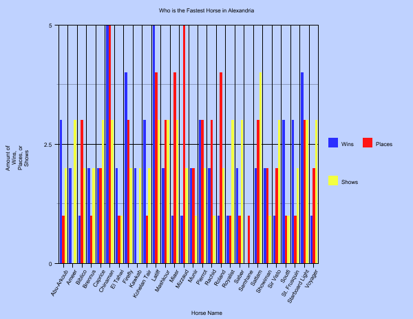
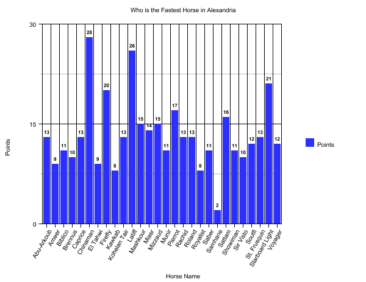

For my serial question for this course, I would like to find out who the fastest horse in all of Alexandria during the year of nineteen-hundred and five. The topic sparked my interest while I was coding the XML for my page threes. I am fascinated by sports and I noticed that there were reoccurring articles regarding horse racing and bets taking place around the races. The manner in which I plan to go about doing my analysis for my final project is querying the entirety of the Gazette for keywords like “horse” and “race” and “odds”. This will help me find what I am looking for in order to compile data to see who the most victorious race horse was. It would be very interesting to find the Secretariat of the early twentieth century.
##Queries I will be using various queries listed on the how to tab on the Digital Egyptian Gazette website like listing all the “divs” by using the query: //div; listing all of the item-type “divs” by using the query: //div[@type=”item”]; listing all the item-type “divs” in your file containing specific words by using the query: //div[@type=”item”[contains(.,’word’)]; finding all tagged names of people by using the query: //persName; and finding all tagged names of places by using the query: //placeName.
##Procedure My plan for accumulating my findings into a report will be consisted of the following steps. I will use the various queries listed above to find the information that I am looking for. First, I will attempt to find articles of text related to races, then use the keyword stakes, then horses to gather everything that I need to do my analysis. The way I will be judging just who the fastest horse in Alexandria is, will be by finding all of the races that went on during the year of 1905, identifying the names of the race horses, and tallying the number of wins (first place), places (second place), and shows (third place) of each horse. After I have done this, I will organize my data into a column chart using a template from Google Charts.
##Data and Analysis At first, I did some research on horse racing and the gambling that goes along with the sport and I found that I did not find very useful information. For the most part, I discovered facts and figures that I was already familiar with. On the contrary, when I was querying the content folder of the Digital Egyptian Gazette for material related to my serial question, using the query //div [@n=”3”//p [contains (.,’stakes’), I came across the term, “furlong”, which I have never heard of before. According to LaurelPark.com, a furlong is equivalent to one-eighth of a mile, or six-hundred and sixty feet. Ergo, a stake that is twelve furlongs, would be a race that is a mile and a half long. I also used the queries, //div [@n=”3”//p [contains (.,’races’), //div [@n=”3”//p [contains (.,’horses’), and //div [@n=”3”//p [contains (.,’totalisator’). All of these keywords are mentioned in every single article related to the races.
In order to analyze my collected data, I developed a point system which gave each horse three points for every win, two points for every place, and one point for every show, and the horse with the most points would be deemed the fastest horse in Alexandria. There were a total of twenty-eight horses who competed in sixty-one races. Although, not every horse took part of every race, which might have caused for some slight error in my data.

In my data visualization, the first graph shows the number of wins, places, and shows and the second graph shows the number of points each horse received, using the point system described in the previous paragraph.

The three horses with the most points were Starboard Light with twenty-one points, Latiff with twenty-six points, and, the winner, Chinaman with twenty-eight points.
##Issues with the Project During my time working on the assignments for this class, I used a wide variety of programs; some of which, worked to perfection while others, simply, did not. I would like to expound upon the reasons for the flaws of those of which I did not feel were effective in completing the workload.
###Microfilm is a “Macro-Flop” The first step that I was instructed to do for this project was to go to the library and use the resources there to scan images of microfilm, which contained the Egyptian Gazette, in order to create a clean, crisp image of each page of my assigned week. This would’ve been easily obtainable had the microfilm not been of such bad quality. The pages that I scanned for my week were, lightly speaking, not the clearest. There were many blotches of black ink spattered throughout the columns and many characters could not even be recognized by the naked eye. Furthermore, some columns were not even visible and a lot of content was missing.
The program itself was difficult to use. A prime example of this claim is the fact that ScanPro 2000 is a quite outdated software and its controls were not optimal for what needed to be accomplished. The scroll wheel for the physical film moved either way too slow, which consumed a considerable amount of time or way too fast, which caused me to lose my place in the paper. This was the same case for the straightening tool, but in the sense of the orientation of the page. Often, when I would finally obtain a perfect image of the page that was worth scanning, the program would not allow me to scan the picture onto my flash drive.
Needless to say, using microfilm to scan images of the Gazette was a formidable hassle, and it was a necessity to go return to the library to repeat this troublesome process, but I suppose that this was the only way that this whole process could be completed.
###AABBY’s OCR Program Reads Text Almost as well as Stevie Wonder Using the AABBY FineReader program was a very stressful process that took a very long while to complete. Its poor character recognition caused for many errors to be included in the text files, which needed to be manually corrected. It was essentially the same thing as typing out most of the paper itself for some portions of the document. In addition, the spellcheck interface was not very user friendly. It would offer an exorbitant amount of suggestions for misspelled words and it was more logical to just enter the word in myself and sometimes, the hotkeys would not function, making the painstaking process even slower than I thought possible.
###Oxygen is a Horrendous Program I believe Oxygen to not be efficient at all for converting text to XML and a very inconvenient program overall. Inserting the text into the program took some much unneeded effort. Whenever I would drag the document over from GitHub to Oxygen, it would either place many arbitrary paragraph marking elements or not add any elements at all to the text.
Also, much like the spellcheck in AABBY, the interface is not user friendly. I could not save my finished work to my desktop, which is a substantial problem given that it was possible for me to lose all of my progress if my trail license were to expire, so I was forced to copy and paste the text into GitHub, which saved all of my work from being banished to oblivion. Although we were given some quite thorough instructions for Oxygen, the program itself is just simply not easy to use.
To add to the latter, many issues are incomplete and are not formatted correctly into XML. This is an understandable problem due to the aforementioned points.
##Conclusion This class has been a struggle, due to the tedious process of completing the work by means of flawed programs and the fact that this was the first time that the class has been offered and taught. Through this struggle, I have learned some skills and tools about computers and how coding works, as well as the importance of preserving history, no matter how big or small it is because some historian or curious mind is out there looking for what you may be developing.
According to my calculated results of my data using the point system, Chinaman is to be considered the fastest horse during the year of 1905 in Alexandria. Honorable mentions include Latiff and Starboard Light. I believe that my findings are somewhat useful in the sense that they could provide insight into a small spectrum of what went on in the world of sports in Alexandria.
I would not have been able to complete my findings without the help and collaboration from my pupils and professor, as they contributed their work to the project which allowed me to collect my data in the first place. I am glad that I took part in this class, but if it were up to me, I would have taken it over the course of two semesters due to the amount of time needed to fully complete everything that was listed in the syllabus at the beginning of the semester. Hopefully, future classes will have more guidance as to how to efficiently work on the course material.
##Bibliography
- “What Is a Furlong and Please Explain the Distances.” What Is a Furlong and Please Explain the Distances. | Laurel Park. N.p., n.d. Web. 11 Dec. 2016.
- “Bar Graph Maker.” Bar Graph Maker | Create a Bar Graph Online. N.p., n.d. Web. 16 Dec. 2016.